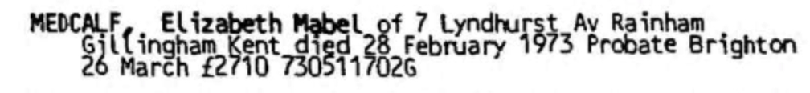
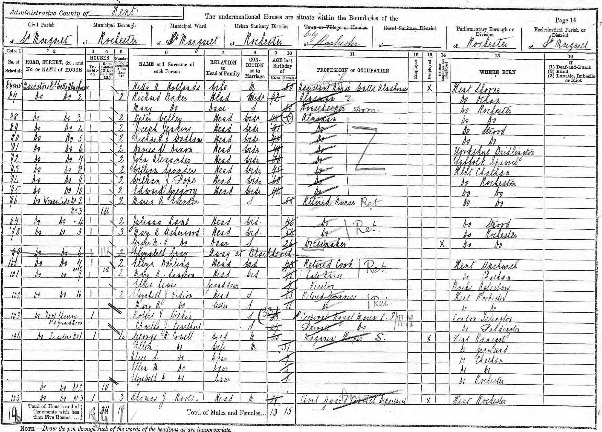
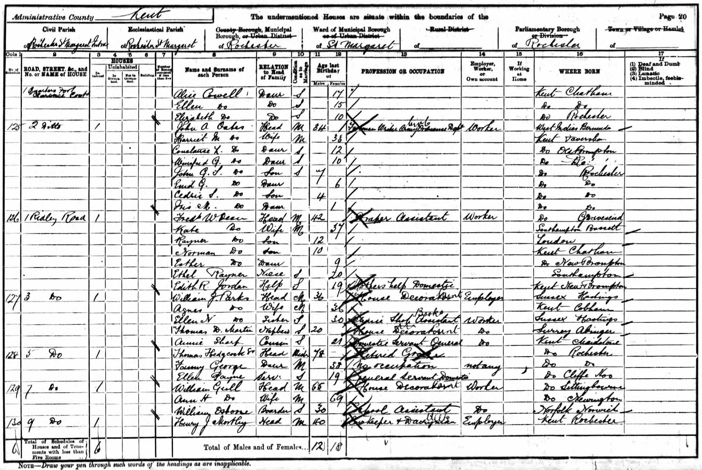
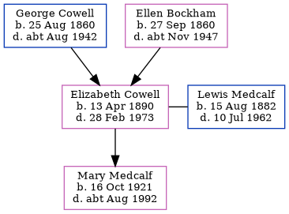

Elizabeth Mabel Medcalf (née Cowell) 1890 - 1973
[ Home ] | [ Calendar ] | [ Surnames Index ] | [ Family History ]A dressmaker and the youngest of 3 children of George Cowell (an army ordnance depot foreman) and Ellen Bockham, Elizabeth Cowell, the third cousin twice-removed on the mother's side of Nigel Horne, was born in Rochester, Kent, England on Apr 13, 18901,2,3,4,5, was baptized there at St Margaret's Church on Jun 15, 1890 and married Lewis Medcalf (a house decorator with whom she had 1 child, Mary Helen) in Medway, Kent, England around May 19206.
Elizabeth spent all of her life in Kent, England. Throughout her life, she lived in several places around the county: on Maidstone Road in Rochester on Apr 5, 18911; at 1 Quarters, Fort Clarence in Rochester on Mar 31, 19012; at Fort Clarence in Rochester on Apr 2, 19117; at 94 Rochester Avenue in Rochester on Sep 29, 19393; and at 7 Lyndhurst Avenue, Rainham in 1973.
She died on Feb 28, 1973 in Chatham, Kent4.
Parents
- George Henry was born on Aug 25, 1860
- Ellen was born on Sep 27, 1860
Children
- Mary Helen was born on Oct 16, 1921
Citations
- 1891 England, Wales & Scotland Census - Findmypast (was age 1 and the daughter of the head of the household)
- 1901 England, Wales & Scotland Census - Findmypast (was age 10 and the daughter of the head of the household)
- 1939 Register - Findmypast (was the wife of the head of the household)
- England & Wales deaths 1837-2007 - Findmypast
- Kent Burials - Findmypast
- England & Wales marriages 1837-2008 - Findmypast
- 1911 Census for England & Wales - Findmypast (was age 21 and the daughter of the head of the household)
Media
Elizabeth Cowell - probate

1891 UK Census

1901 UK Census

1911 UK Census - page 1

1911 UK Census - page 2

1891 England, Wales & Scotland Census - GBC/1891/0005385106
England & Wales deaths 1837-2007 - BMD/D/1973/1/AZ/000926/113
England & Wales marriages 1837-2008 - BMD/M/1920/2/AZ/000320/004
England & Wales births 1837-2006 - BMD/B/1890/2/AZ/000126/193
1939 Register Transcription - TNA-R39-1772-1772G-016-18
1911 Census For England & Wales - GBC-1911-RG14-03888-0445-4
Kent Burials - KENT/FHS/BUR/CIVIL/179994
Kent Baptisms - PRS/MEDWAY/BAP/0400976
Family Tree
Generated by Ged2Site. Last updated on Jul 20, 2025